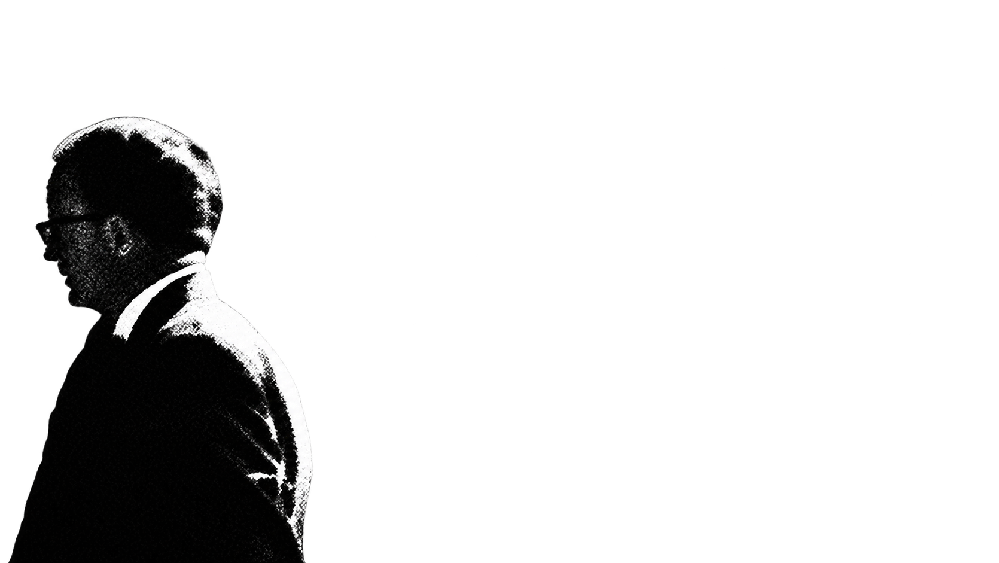
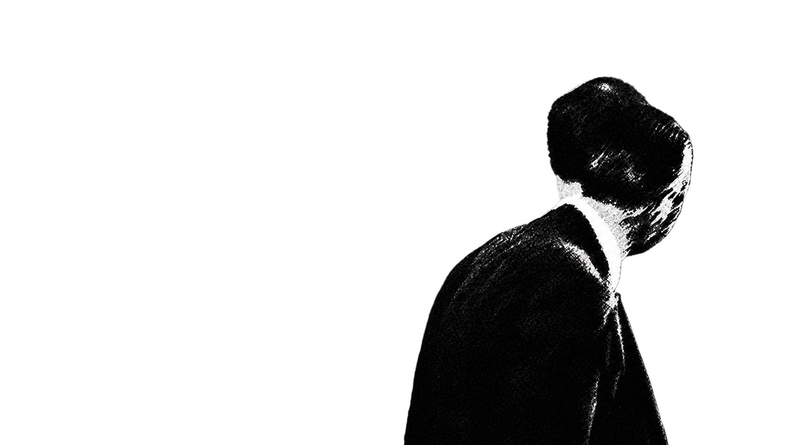
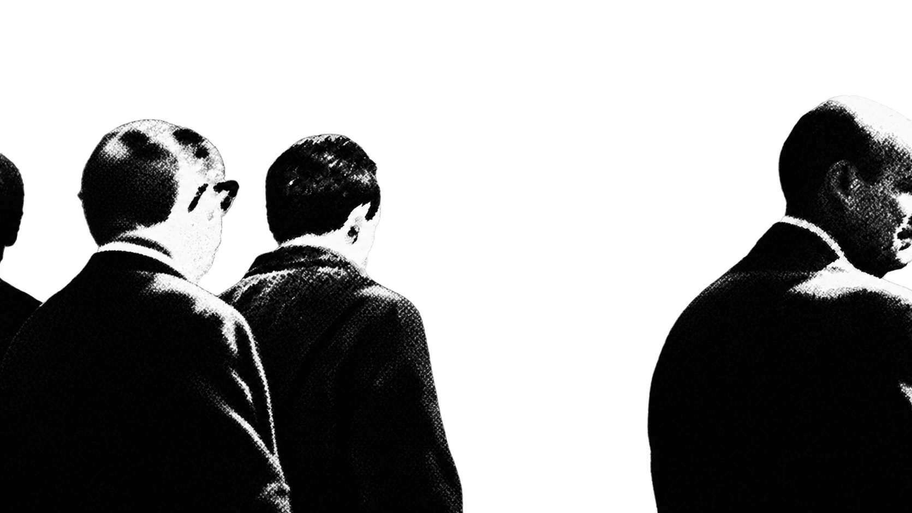

Crowd assets / Step 1
Seven people. One still subject.
These clippings come directly from the current animation. B, C, G and D use your supplied portraits. G remains separate behind D.
Live runtime clippings · Open the working motion review →
Corrected person map
Current layers · 1671 × 941G: behind, upper left. D: in front, lower right. A–F retain the original labels. The binary subject is omitted so the full crowd layers can be inspected.
Inspect each person
Current assets · Final positionsLoading current clippings…
B — uploaded cutout
Your complete transparent PNG, used directly in the animation.
D — supplied portrait
Your supplied D portrait, with its exterior background removed.
G — separate rear figure
Your uploaded transparent G portrait, behind D.
Earlier generated candidates — not approved
The old D_full.png merges D and G. It is superseded for person identification. Opus’s later person-map-v2.png reverses your D/G labels and is not used here.
B — earlier candidate

1670 × 941. Texture and contour differ from source; not a final replacement.
D + G — incorrectly merged candidate

Do not treat this as one person.
A, F, C, E — earlier back plate

G is missing from this plate. It is not a complete background for a D-only mover.